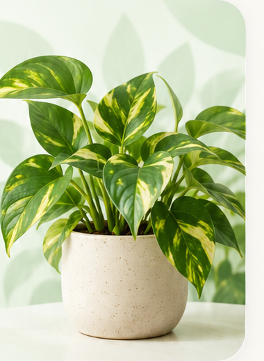

9:41
1/3
A foto ficou boa?
Confira se as folhas aparecem bem.

Foto pronta
Identificar planta
Escolher outra foto
Confira se as folhas aparecem bem.

Estamos observando as folhas da sua foto.
Confira se encontramos a planta certa.